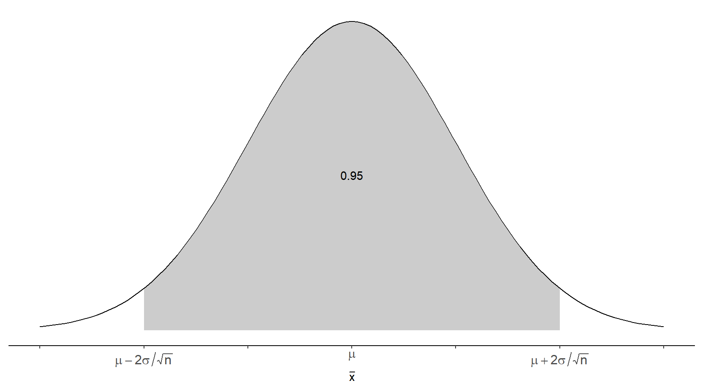
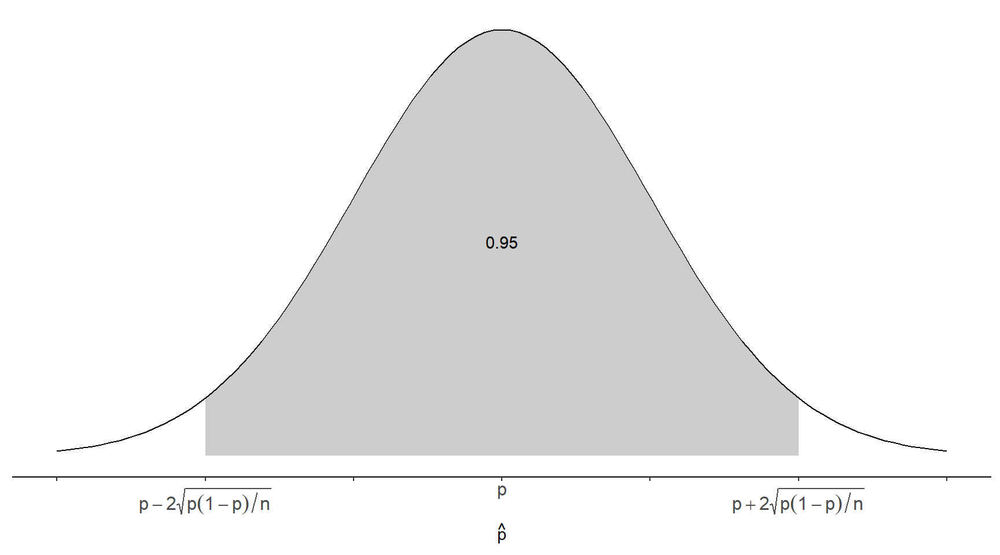
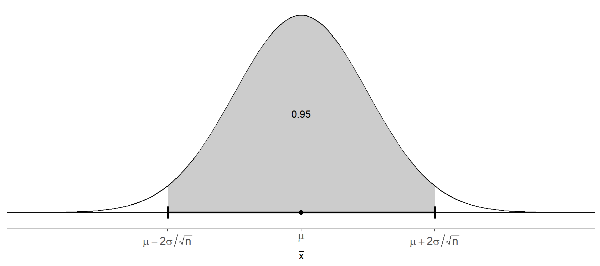
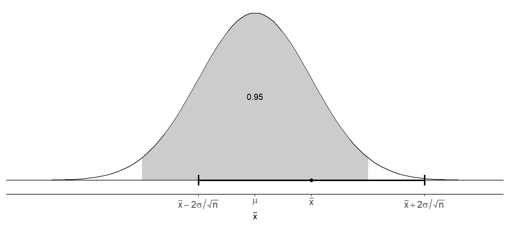
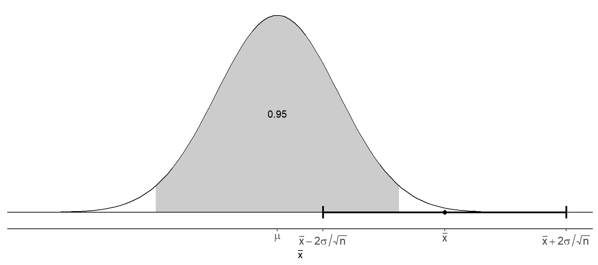

You can also download a PDF copy of this lecture.
Note: To keep the notation simple, we will use \(\mu\) and \(\sigma\) to represent the mean and standard deviation of \(x\), respectively (i.e., we will omit the subscript from \(\mu_x\) and \(\sigma_x\)).
We know the following about the sampling distribution of \(\bar{x}\):
This allows us to make statements about the probability that \(\bar{x}\) will be within a certain distance of \(\mu\).

We can say that \[ P\left(\mu - 2\frac{\sigma}{\sqrt{n}} < \bar{x} < \mu + 2\frac{\sigma}{\sqrt{n}}\right) \approx 0.95, \] which can also be stated as \[ P\left(|\bar{x} - \mu| < 2\frac{\sigma}{\sqrt{n}}\right) \approx 0.95. \] The probability that the distance between \(\mu\) and \(\bar{x}\) will be less than \(2\sigma/\sqrt{n}\) is approximately 0.95. We call this distance the margin of error.
The choice of a probability of 0.95 is arbitrary, but is a common convention. We can make similar statements for other probabilities. Recall that the standard error of \(\bar{x}\) is its standard deviation, which is \(\sigma/\sqrt{n}\). The probability that the distance between \(\mu\) and \(\bar{x}\) does not exceed the standard error is about 0.68. That is \[ P\left(|\bar{x} - \mu| < \frac{\sigma}{\sqrt{n}}\right) \approx 0.68. \] So the standard error corresponds to a margin of error for a probability of 0.68.
We might call \(|\bar{x} - \mu|\) the error of estimation. We know some things about the distribution of the error of estimation.
The 95th percentile of the error of estimation is about \(2\sigma/\sqrt{n}\) (from above).
The 68th percentile of the error of estimation is about \(\sigma/\sqrt{n}\) (from above).
The 50th percentile of the error of estimation is about \(0.674\sigma/\sqrt{n}\). This is its median.
The mean of the error of estimation is about \(0.798\sigma/\sqrt{n}\).
Example: Let \(x\) be yield of a chemical reaction under certain circumstances. Assume that \(x\) has a mean of \(\mu\) = 10 g and a standard deviation of \(\sigma\) = 0.5 g. Let \(\bar{x}\) be the mean yield for a sample of \(n\) = 25 observations of \(x\). What are the standard error and the margin of error of \(\bar{x}\)? What are the median and mean of the error of estimation?
Example: Suppose that the mean height of all Hobbits is 100 cm, and the standard deviation of all heights is 10 cm. Let \(x\) be the height of one Hobbit, selected at random. Then \(x\) has a mean of \(\mu\) = 100 cm and a standard deviation of \(\sigma\) = 10 cm. What are the standard error and the margin of error of \(\bar{x}\) computed from a sample of \(n\) = 25 Hobbits? What are the median and mean of the error of estimation?
Note that calculation of the standard error and margin of error do not require knowing \(\mu\). But they do require \(\sigma\). In practice this parameter would be unknown, so we can estimate it using the standard deviation from the sample (i.e., \(s\)).
Example: Let \(x\) be yield of a chemical reaction under certain circumstances. Let \(\bar{x}\) be the mean yield for a sample of \(n\) = 25 observations of \(x\). Suppose we obtain a sample and find that \(s\) = 0.4. What are the (estimated) standard error and the margin of error of \(\bar{x}\) What are the (estimated) median and mean of the error of estimation?
Example: Let \(x\) be the height of one Hobbit, selected at random. Suppose we obtain a sample of \(n\) = 25 Hobbits and find that \(s\) = 10.2. What are the (estimated) standard error and the margin of error of \(\bar{x}\)? What are the (estimated) median and mean of the error of estimation?
Note: Recall that \(\hat{p}\) is just a special case of \(\bar{x}\) that results in some algebraic simplifications.
We know the following about the sampling distribution of \(\hat{p}\):
This allows us to make statements about the probability that \(\hat{p}\) will be within a certain distance of \(p\).

We can say that \[ P\left(p - 2\sqrt{p(1-p)/n} < \hat{p} < p + 2\sqrt{p(1-p)/n}\right) \approx 0.95, \] which can also be stated as \[ P\left(|\hat{p} - p| < 2\sqrt{p(1-p)/n}\right) \approx 0.95. \] The probability that the distance between \(p\) and \(\hat{p}\) will be less than \(2\sqrt{p(1-p)/n}\) is approximately 0.95. We call this distance the margin of error. Note that the standard error here is \(\sqrt{p(1-p)/n}\).
Example: Let \(x\) be whether or not polymerase chain reaction (PCR) test is successful under certain circumstances. Assume that the probability of success is 0.8. Suppose we conduct 100 tests to produce a sample of \(n\) = 100 observations of \(x\). Let \(\hat{p}\) be the proportion of these on which the test was successful. What are the standard error and margin of error of \(\hat{p}\)?
Example: Assume that 20% of all adult Hobbits have foot lice. Suppose we were to obtain a sample of 100 observations of Hobbits and compute the proportion of Hobbits in the sample that have foot lice. What are the standard error and margin of error of \(\hat{p}\)?
Note that computing the standard error and the margin of error of \(\hat{p}\) require \(p\), which we would not typically know in practice. But it can be estimated from a sample using \(\hat{p}\).
Example: Let \(x\) be whether or not polymerase chain reaction (PCR) test is successful under certain circumstances. Suppose we conduct 100 tests to produce a sample of 100 observations of \(x\) and observe that the PCR test was successful on 90 of those 100 observations. What are the (estimated) standard error and margin of error of \(\hat{p}\)?
Example: Suppose we obtained a sample of 100 of Hobbits and found that 15 had foot lice. What are the (estimated) standard error and margin of error of \(\hat{p}\)?
Two kinds of estimation:
Point estimation is estimation of the value of a parameter with the value of a statistic (e.g., estimation of \(\mu\) with \(\bar{x}\), or estimation of \(p\) with \(\hat{p}\)).
Interval estimation is the estimation of the value of a parameter with an interval of values. The device we will be using for interval estimation is a confidence interval.
Some algebra shows that if \[ P\left(\mu - 2\frac{\sigma}{\sqrt{n}} < \bar{x} < \mu + 2\frac{\sigma}{\sqrt{n}}\right) \approx 0.95, \] then \[ P\left(\bar{x} - 2\frac{\sigma}{\sqrt{n}} < \mu < \bar{x} + 2\frac{\sigma}{\sqrt{n}}\right) \approx 0.95, \] The confidence interval \[ \bar{x} \pm 2\frac{\sigma}{\sqrt{n}} \Leftrightarrow \left(\bar{x} - 2\frac{\sigma}{\sqrt{n}}, \ \bar{x} + 2\frac{\sigma}{\sqrt{n}}\right). \] has a probability of approximately 0.95 of containing \(\mu\).
 Note: In practice, we need to replace \(\sigma\) with \(s\) since \(\sigma\) will be unknown.
Example: Let \(\mu\) be the mean height of all Hobbits. A recent survey found that in a random sample of 64 Hobbits the mean height was \(\bar{x}\) = 95 cm and the standard deviation was \(s\) = 16 cm. What is the confidence interval for estimating \(\mu\)?
We can similarly derive a confidence interval for \(p\) as \[ \hat{p} \pm 2\sqrt{p(1-p)/n} \Leftrightarrow \left(\hat{p} - 2\sqrt{p(1-p)/n}, \ \hat{p} + 2\sqrt{p(1-p)/n} \right). \] Note: In practice, we need to replace \(p\) with \(\hat{p}\) since \(p\) will be unknown.
Example: Let \(x\) be whether or not polymerase chain reaction (PCR) test is successful under certain circumstances. Suppose we conduct 100 tests to produce a sample of 100 observations of \(x\) and observe that the PCR test was successful on 90 of those 100 observations. What is the confidence interval for estimating the probability of a successful PCR test?
Example: Suppose we obtained a sample of 100 of Hobbits and found that 15 had foot lice. What is the confidence interval for estimating the proportion of all Hobbits that have foot lice?